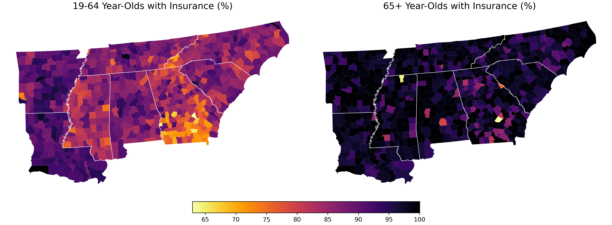
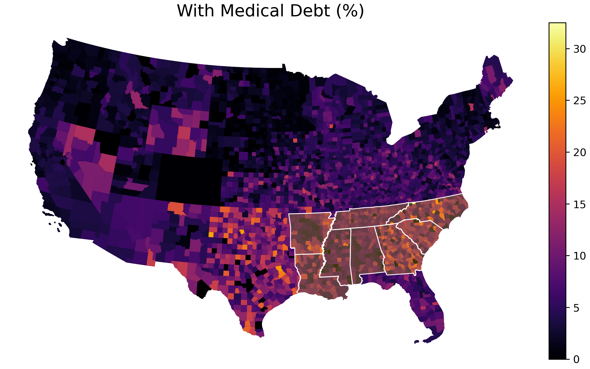
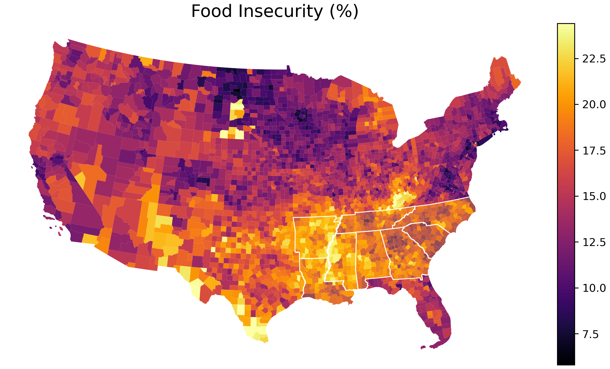

Hypertension and treatment across the Stroke Belt
tract-level study of who develops high blood pressure and who gets treated
- skills
- geospatial joins · choropleth mapping · area-level regression · permutation testing of preregistered hypotheses · outlier rules for bounded measures
- tools
- data
- CDC PLACES tract estimates · ACS 5-year estimates · Census TIGER geometries · county stroke, insurance, debt and food-access files
- status
- finished
question
Within the Stroke Belt, is high blood pressure more common where obesity is, and are diagnosed adults less likely to be on medication where the Black population share is larger?




calls made
- widened from one metro to the Stroke Belt states. the cleaned Chicago sample was a tiny slice of US tracts, and the hypertension burden is documented across the region.
- medication coverage among adults already diagnosed as the treatment outcome, not recorded prevalence. low recorded prevalence can mean less testing rather than less disease.
- interquartile rule for flagging high-burden tracts, not z-scores. tract percentages are bounded and right-skewed.
- collinear behavioural measures left out of the second model. inactivity, smoking and short sleep are multicollinear with obesity, the predictor of interest.
what broke
- tract IDs kept losing their leading zero when read as numbers, which silently breaks joins for every state whose FIPS code starts with one.
- the first model cell was committed in an erroring state after the medication column was renamed.
- the source column name for the treatment measure implied a share of the whole tract population rather than of diagnosed adults. renamed before analysis.
what i tried
first version was Chicago tracts with HOLC redlining grades. too few tracts survived cleaning, so the team moved to Stroke Belt states and dropped the redlining layer.
not shown
- four-person INFO 2950 group project; the decisions above are the team's